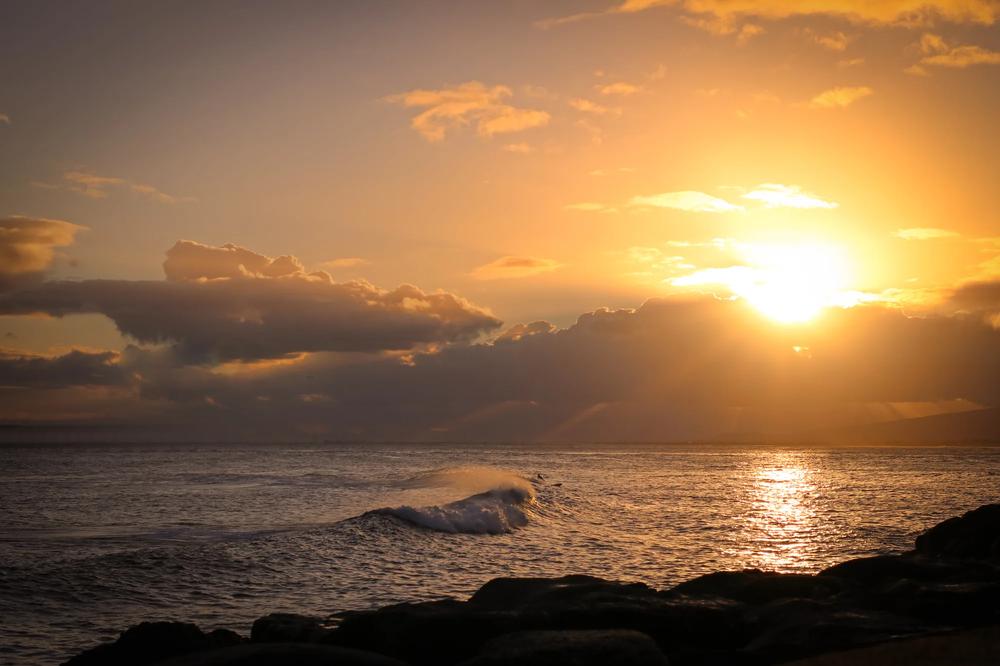

← All galleries
Landscapes & Travel
From Oʻahu’s changing skies to mountain roads in Canada, a collection of places worth pausing for.
17 selected photographs
← Back to portfolio
Golden light over the Pacific1 / 17
Swipe the photographs sideways or use the arrows. Tap the large image to see it full screen.
Keep exploring